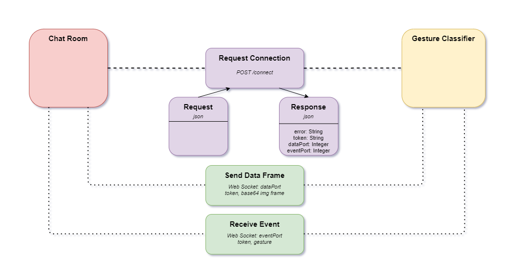

Gezr - Gesture Analyzer
1. Abstract
WADE Cool Project Solution
2. Introduction
A Web application that detects, classifies, compares, and synchronizes hand and arm gestures performed by users.
3. Architecture
Gezr - Gesture Analyzer application follows a service based structure.

3.1 Web Interface
Bla bla bla

Bla bla bla

Bla bla bla

Bla bla bla

3.2 Main Server
Bla bla bla

3.3 Chatroom
Bla bla bla

3.4 Gesture Classifier
Bla bla bla
4. Data Modelling
Bla bla bla.
5. Conclusion
Bla bla bla.